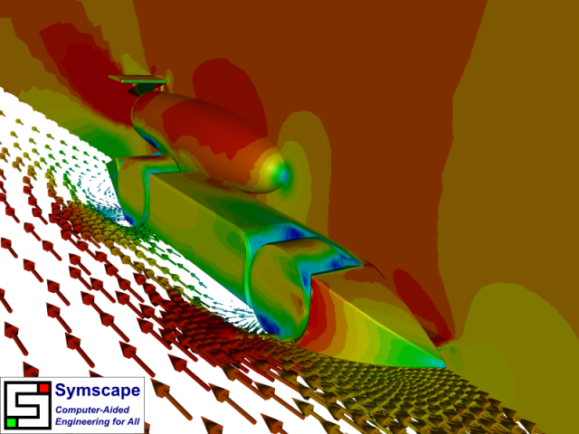

F1 in Schools Dragster v2.0 CFD Analysis
After reviewing the Caedium RANS Flow results posted in "CFD Analysis of an F1 in Schools Dragster," Brett Sizeland, Basilisk Performance team's chief designer, has been busy updating his F1 in Schools CO2 dragster design. Using the same geometry preparation process, physics setup, and post-processing, all within Caedium's unified simulation environment, we were able to rapidly perform the new simulation and extract the flow results presented here.
F1 in Schools v2.0 Dragster
Physics
The flow conditions and turbulence model were identical to the previous case:
- Free-stream air speed and moving-ground speed = 22 m/s
- Wheel rotation speed = 16,307 rpm = 97,804 deg/s
- CO2 jet speed (assuming nozzle diameter = 4 mm) = 154 m/s
- k-omega SST
Results
Rear View of Velocity
 Front View of Pressure
Front View of Pressure
Rear View of Pressure
 Front View of Streamlines
Front View of Streamlines
Rear View of Streamlines
Drag and lift monitors were created in Caedium for the car, and a comparison with the previous simulation results is shown in the table below:
| Quantity | Previous Design | Current Design |
| Drag (N) | 0.332 | 0.318 |
| Lift (N) | 0.06 | 0.2 |
Conclusion
The new dragster design has a much smoother flow around the wheels when compared to the previous design, as shown by the velocity vectors and streamlines. This improvement likely accounts for the lower drag of the new design.
Interestingly the lift of the new design is significantly higher than the previous design. This shouldn't be a problem as long as it is significantly less than the weight of the car in order to avoid the car taking off. The extra lift may be a benefit, as it will reduce the frictional forces (which are proportional to the weight of the car) between the wheels and the ground.
Try For Yourself
The sym project file for this study can be viewed in Caedium or you can investigate this case yourself using our RANS Flow add-on.
The most convenient way to view and edit this case is to use our Professional add-on that combines all the add-ons used during this example.
Feedback
Questions? Ideas? Problems?

Comments
velocity contours
Hi Rich,
I have a question about the velocity contours. I assume you mapped off surface velocities to the surface, since for a NS solution the actual surface velocities, except for the wheels, are zero. How far off from the surface were the velocity samples taken?
Martin
Velocity Interpolation
As you rightly assumed, the velocity vectors are interpolated from the field values (cell-centers to nodes), so in terms of the surface the values come from the nearest cells. Also this simulation was performed with wall functions (high Reynolds number turbulence model), so the first cell heights are not too close to the walls, though they are within the log-law region.
Turn around time
Hi Rich,
Can you elaborate a little on what it took to solve the problem in terms of the type of machine/processor, how many cores, how much memory, and how many grid points. Also, how many iterations did it take before you reached your solution and how long (wall clock) did it take?
Thanks,
Martin
Statistics
I wasn't planning on this being a benchmark, but here goes:
Machine
Case
Australian Champions
Keen to see how this design fared in the heat of competition? Then see "New Australian F1 in Schools Champions Helped by Caedium."
student working on a dragster
i love the desien but what is the intier blue prints of this dragster there is harly any work shown in the basilick
all that is there is just the arodinamick no grafs no #s no work what so ever so can u please send me the hole work and dimentions along with the softwar to this racer and pics 2. also i will need some sort of paper saying that im allowed to us this disien. please send me this hole paper and every thing that i have asked for to
c1e1e6 Enmen Cresent Prince Edward Island Canada
senserly. Brandon Bernard